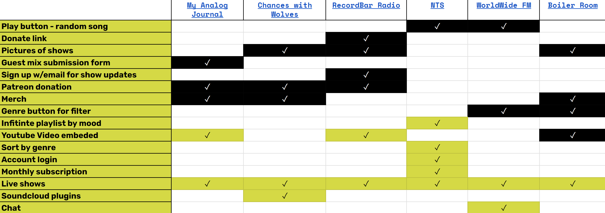

For the final project in my UX bootcamp, I along with three classmates designed a website for Silicon Radio, a radio station featuring shows of live DJs playing rare international music.
Role
UX Designer
Deliverables
Functional website
Tools Used
Figma, Visual Studio Code, Bootstrap
Brief
My classmate's husband had recently begun DJing shows on Friday evenings where he showcased his collection of rare and unique records from all around the world. He wanted to have a website called Silicon Radio where he can publicize his upcoming shows, let users listen to his old shows, discover new artists, and share other shows by other DJs who play international music.
Industry Context
Live Streams
The live streaming market will be worth over $247 billion by 2027.
My role was the UX Designer focused mainly on basic front-end development. I also helped with conducting user interviews and designing the high-fidelity prototype.
User Research
We wanted to gain a better understanding of our potential users, who are either listeners and guest DJs, by getting to know their personalities, habits, backgrounds, motivations, and core needs. Most importantly, we sought to understand how our users discover and experience new music, and what compels them to seek it out.
Research Plan
Stakeholder interview - to establish project requirements
Survey - to understand user preferences and habits
User Interviews - to uncover emotional motivators
Competitor Analysis - to audit competitor's features for differentiation
Stakeholder Interview
Our stakeholder wanted to create Silicon Radio as a platform that streams live sessions with "bedroom DJs" who share vinyl mixes with people all over the world. His requirements were for the site to have a feature to play random mixes, showcase flyers for shows and DJs, and support plugins for various platforms such as YouTube and Soundcloud. His aspirational features were for the site to have an "international vibe", allow for discovery of new music categorized by genre, and to have a membership/monetization feature.
User Interviews & Survey
We first developed a survey to understand how users listen to music and discover new music. Afterward, we then conducted several interviews to find out users' backgrounds, hobbies, and preferred musical genres. The focus was on understanding how users listen to music, especially via streaming, and if they interact with DJs, artists, or collect records.
Specfically, we wanted to know:
How do people search for, discover or gain exposure to new music?
What role does music play in our users’ lives?
How do our users experience live music events online?
What role does community play in habits and decisions about music?
Are there any features of existing music streaming platforms that we should incorporate or exclude from our product based on user preferences or expectations?
What are our users’ favorite genres of music and ways to listen?
Interview Insights
Seeking Connections
"I go to shows to meet up with people, exchange music, and try to work together."
Uncommon Taste
"I love finding music from other parts of the world, stuff that wasn't popular, hidden gems."
Live Show Energy
"Live shows are different, you're there with people mingling, there's a different energy."
Competitor Analysis
In order to understand what features our website would have, we completed a competitor analysis with other websites that feature live DJ shows. What we found was features varied greatly from one site to another, with some focusing more on simply showcasing music while other sites offered more ways to engage with the DJs and the music being played.

Research Results
We found that users:
Love the vibe and energy of listening to live music. Whether it was watching in person, catching a live stream, or simply a video of a live performance, participants valued the different energy and community of live musical performances.
Value the musical community. Participants talked about their love of meeting fellow fans at live performances, participating in online discussions about their favorite artists, sharing playlists, and interacting with their favorite artists through social media.
Like discovering new music. The mediums for how our participants discovered new music were varied, from streaming algorithms, friends, and social media, but they all identified that it was a major part of their musical identity. 82% of our survey respondents listen to new music every day and 71% discover new music from their friends.
User Insight
People who are serious about discovering rare beats, want to meet like-minded individuals, because they know personal connections are the best way to discover hidden gems and lesser known artists.
Define
After performing research and gathering insights about how users engage with music, the next step was to define a problem statement for the website. We followed this by brainstorming website features and then prioritizing them. Finally, we created a persona in order to best represent our users goals, needs, and frustrations and developed a site map to guide our wireframe design process.
Problem Statement
As an aspiring DJ who is serious about rare beats, I am trying to find communities online that amplify lesser known artists, so that I can discover new music and connect with collaborators all over the world. However, it can be difficult to find international, uncommon or older music relying only on streaming platforms like Spotify. Ultimately, this drives me to invest time seeking out shows, hunting down track lists and searching discographies rather than working on my own craft.
Feature Brainstorming and Prioritization
We performed an "I need, I want, I wish" exercise in order to brainstorm features for the website, drawing on the user research findings, stakeholder requirements, and competitor analysis. Afterward, we arranged the features into a prioritization index in order to plan out which features we would be concentrating on for the website design.
Persona
Using data from our research interviews and survey, we created a persona to represent a typical user. This persona will be used to keep the problem statement we defined in mind when designing the website. The persona we designed is an DJ by night who is looking to discover new, obscure music, and engage with like-minded fans.
Site Map
Our group put together a sitemap for the website, incorporating the various features that we had prioritized into the site's information architecture.
Design
Wireframes and Prototypes
Our team next created wireframes and then prototypes for every page in our site map.
Usability Testing
Once our prototypes were completed, we performed usability testing to determine whether our design would be intuitive to users by obtaining feedback and then iterating and refining the design to address any issues. We developed five tasks for our usability tests to see if users could find and use various features of the site such as the "random mix" and "chat" functions, and how they interpret and understand features like "Curations" and "Secret Society".
After testing, we updated our design to address usability pain points.
Before
"Community" page functionally seen as limited, and "Secret Society" was hard to find and confusing
After
Consolidated features in the "Community" page and explained ways to engage with the website
Before
Website purpose was unclear upon users' first visit
After
Added value proposition to hero section of home page
Mood Board
After the low-fidelity prototypes had been testing and updates were completed, we created a mood board to collect inspiration for our design.
Style Tile
We then used our mood board to design a style tile to guide the look of our high-fidelity prototype.
Deliver
High-Fidelity Prototype
We then used our mood board to design a style tile to guide the look of our high-fidelity prototype. This was made first in Figma and then coded using HTML and CSS using the Bootstrap framework due to the limited time constraints of our project and to ensure a responsive design.